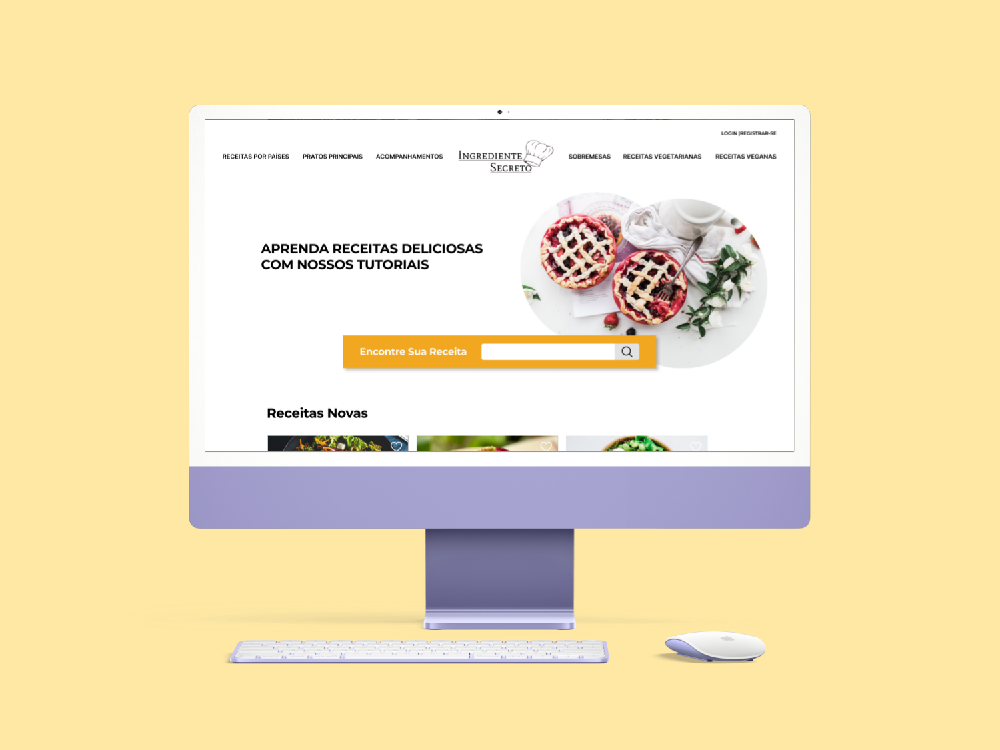
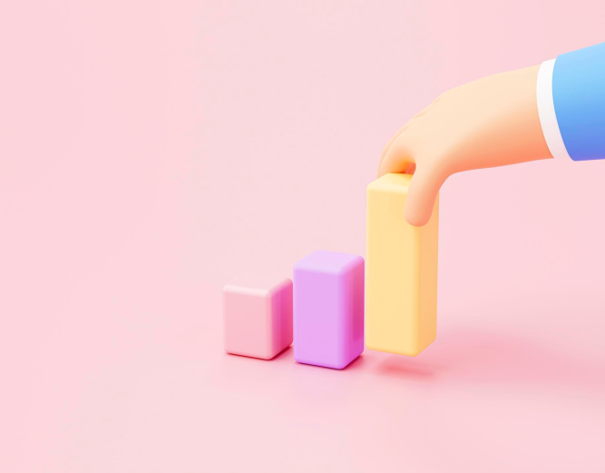

UI design
Ingrediente Secreto
O projeto Ingrediente Secreto é um protótipo de site que foi desenvolvido com o intuito de beneficiar estudantes de gastronomia, donas de casa e amantes da culinária oferecendo tutoriais de receitas de forma simples e didática.

UI design
Redesign Landing Page
O projeto é uma proposta de redesign da landing page da empresa Guia de Moteis.

UI/UX design
ContaLeve, app para controle de consumo de energia elétrica
Este projeto está na etapa de Teste do Design Thinking.